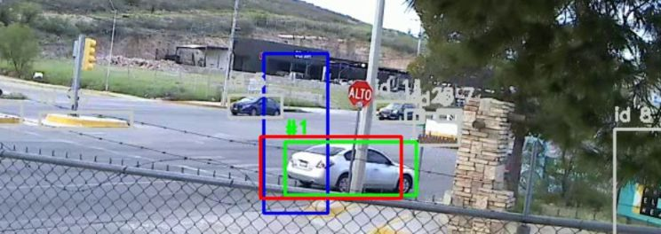
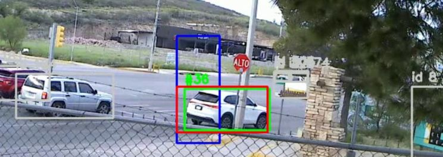
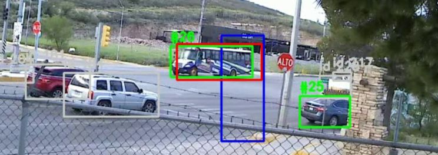
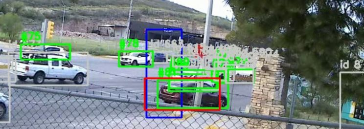
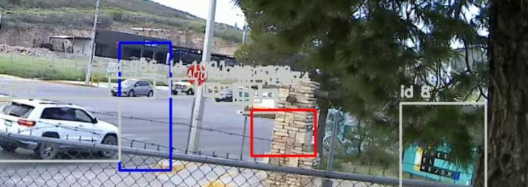
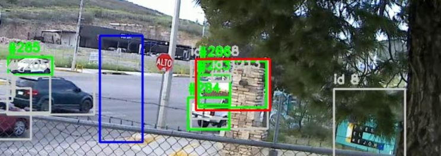

¿Qué tan bien cuenta autos un modelo de visión?
Construí un contador automático de vehículos por sentido de circulación y lo evalué vehículo por vehículo contra un aforo hecho a mano. El F1 es de 0.88: casi perfecto en el carril der→izq y con errores concentrados en izq→der cuando el tráfico se detiene en el semáforo.
Precisión y recall por sentido.
El total por sentido da 152/157 contra 152/153 a mano, un acierto aparente del 99 %. Ese número esconde errores que se cancelan: un auto contado dos veces compensa a uno que no se contó.
| Sentido | Contados | Aforo a mano | Bien (TP) | De más (FP) | Faltantes (FN) | Precisión | Recall | F1 |
|---|---|---|---|---|---|---|---|---|
| izq → der | 152 | 152 | 119 | 33 | 33 | 0.78 | 0.78 | 0.78 |
| der → izq | 157 | 153 | 151 | 6 | 2 | 0.96 | 0.99 | 0.97 |
| Total | 309 | 305 | 270 | 39 | 35 | 0.87 | 0.89 | 0.88 |
El rango sale de 50 recortes difíciles de juzgar (cajas encimadas, autos tapados). Con la mejor lectura el F1 es 0.88; si los 50 fueran error, sería 0.81.
Evaluar cada conteo, no solo el total.
- Detección con RT-DETR-x reentrenado sobre la cámara, con confianza 0.08 en los carriles cercanos (autos tapados) y 0.4 en el carril del fondo.
- Seguimiento con OC-SORT: cada vehículo recibe un ID que se mantiene entre cuadros.
- Conteo cuando un ID cruza la franja de conteo; el sentido sale del lado por el que entra.
- Para cada uno de los 309 conteos se recortó el cuadro del video en el instante del cruce, con la caja marcada.
- Cada recorte se marcó como bien, doble (mismo auto ya contado con otro ID), no es vehículo u otro sentido.
- Los vehículos no contados se obtienen restando los conteos correctos al aforo a mano de cada sentido.
Recall = TP / (TP + FN)
F1 = 2·TP / (2·TP + FP + FN)
Los errores se juntan en las filas del semáforo.
Cada marca es un conteo, en el segundo en que cruzó la franja. 26 de los 33 errores de izq→der caen en tres momentos de fila; der→izq casi no falla.
Ver como tabla (por tramo de 30 s)
| Tramo | izq→der conteos | izq→der errores | der→izq conteos | der→izq errores |
|---|
Ejemplos de recortes revisados.
La caja roja es lo que el programa contó en ese instante; las etiquetas verdes #N son vehículos ya contados.
Conteos correctos



Errores



Qué pasa en la fila y qué sigue.
- Los autos se detienen en 2–3 filas; los de adentro quedan tapados por los de afuera y por una columna de piedra.
- El tracker cambia de ID a un auto detenido: lo cuenta dos veces y se salta al de al lado. Por eso hay 33 de más y 33 faltantes, y el total cuadra.
- Los conteos erróneos tienen confianza media de 0.28 contra 0.84 de los correctos, pero filtrar por confianza no sube el F1: también quita autos tapados reales.
- Seguimiento que conserve el ID mientras el auto está detenido en la fila.
- Validar con más videos aforados a mano: 16 videos del 14 de octubre con aforo por movimiento.
- Cerrar el rango 0.81–0.88 revisando los 50 recortes dudosos.